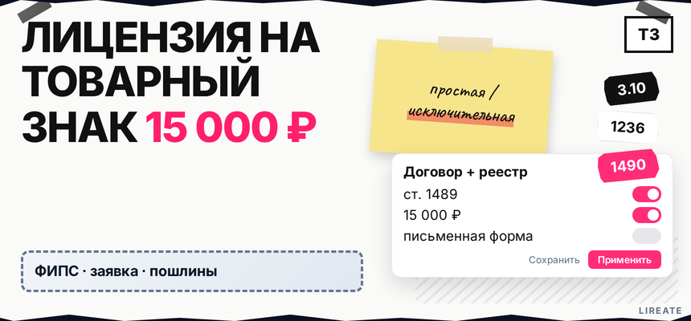
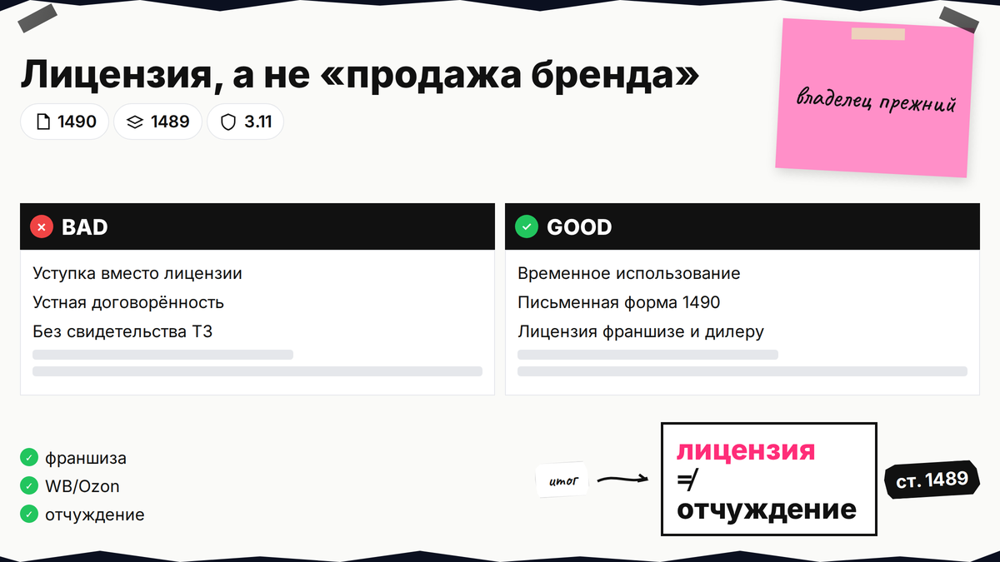
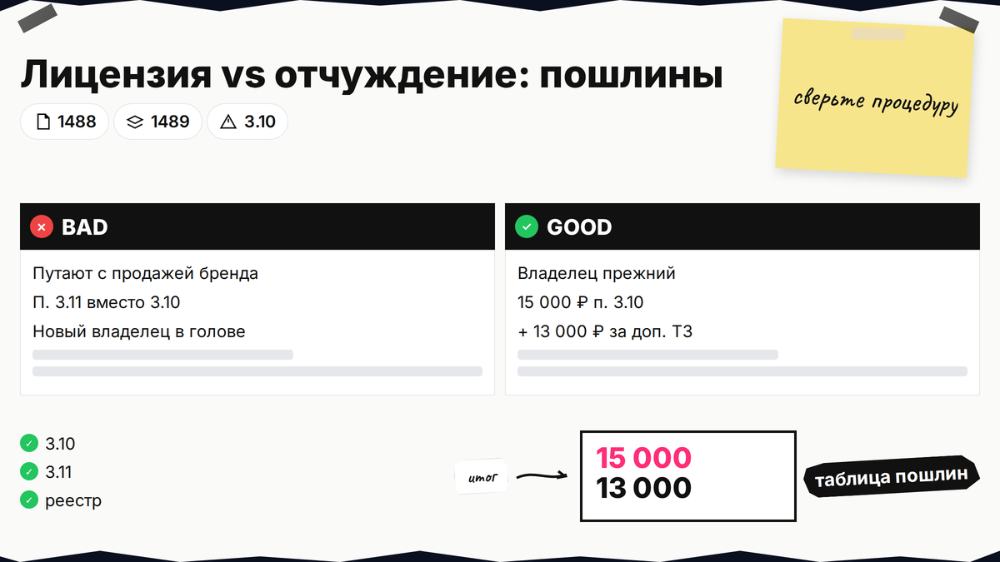
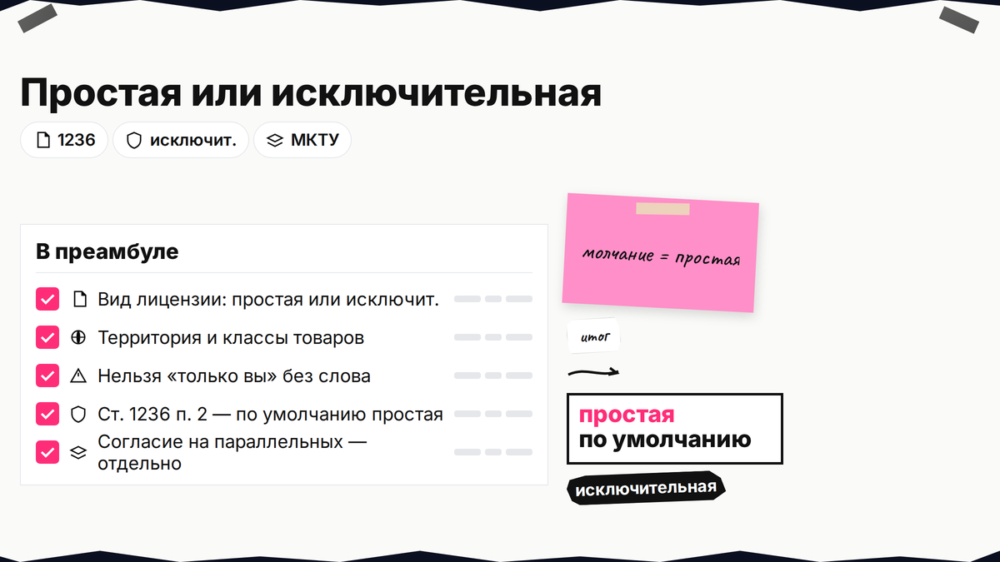

Франчайзи или дилер просят пользоваться вашим логотипом, а без лицензионного договора на товарный знак и записи в Роспатенте партнёр не сможет противопоставить право третьим лицам (ст. 1232 п. 6). Устная договорённость не заменяет письменную форму (ст. 1490). Ниже вы выберете вид лицензии, соберёте условия по ГК, оплатите 15 000 ₽ по п. 3.10 и подадите заявление на регистрацию предоставления права.

TL;DR / Быстрый инсайт: Лицензия - право пользоваться зарегистрированным ТЗ без смены правообладателя; отчуждение - продажа знака. Виды: исключительная и простая (ст. 1236); молчание в договоре = простая. Нужна письменная форма и госрегистрация предоставления права; без реестра право несостоявшееся. Пошлина п. 3.10: 15 000 ₽ + 13 000 ₽ за каждый доп. ТЗ в заявлении.
Для правообладателя, дилера и селлера. Нормы и пошлины сверены на 11.11.2026; материал не заменяет индивидуальную консультацию. МКТУ - международный перечень классов товаров и услуг, в которых действует знак.

Лицензия уместна, когда бренд остаётся у вас, а партнёр временно пользуется именем: франшиза, дилерская сеть, контрактное производство с вашей этикеткой, дочерняя компания в группе, соглашение с селлером на Wildberries и Ozon. Если цель - навсегда передать монополию на знак другому лицу, это отчуждение (договор отчуждения товарного знака), не лицензия. Если вы только придумываете имя и ещё не подали заявку - сначала разберитесь, нужна ли регистрация товарного знака; без действующего свидетельства лицензировать нечего.
Делайте: в переписке сразу фиксируйте, что речь о временном использовании, а не о продаже бренда. Не делайте: подписывать "договор уступки" или "передачу исключительного права", когда по смыслу нужна лицензия - последствия и пошлины другие (п. 3.11).

| Процедура | Эффект | Пошлина |
|---|---|---|
| Лицензия (ст. 1489) | Владелец прежний, есть пользователь | п. 3.10: 15 000 ₽ + 13 000 ₽ (таблица; канон — rospatent.gov.ru) |
| Отчуждение (ст. 1488) | Новый правообладатель | п. 3.11: 15 000 ₽ + 13 000 ₽ |
Делайте: в договоре франшизы отдельно выделить лицензию на ТЗ. Не делайте: путать лицензию с продажей бренда в учёте.

По ст. 1236 при простой лицензии лицензиар может выдавать права другим; при исключительной в тех же пределах обычно не лицензирует параллельно (п. 1.1). Если вид не указан, действует простая лицензия (п. 2) - частая ошибка франчайзи.
| Параметр | Простая лицензия | Исключительная лицензия |
|---|---|---|
| Другие лицензиаты в тех же пределах | Допустимы | Как правило, нет |
| Сам лицензиар использует знак | Может (если не запретили) | Обычно не может в тех же пределах |
| Если вид не прописан | По умолчанию считается простой | |
Делайте: в преамбуле указать вид лицензии, территорию и классы. Не делайте: верить устному "только вы в городе" без слова "исключительная".
Сублицензия - когда лицензиат передаёт часть прав дальше (субдилер, субфранчайзи). По ст. 1238 нужно письменное согласие лицензиара; объём прав сублицензиата не может быть шире, чем у лицензиата. Срок сублицензии не длиннее основной лицензии (п. 3). На сублицензию тоже регистрируют предоставление права (та же линия п. 3.10), а не "отдельный вид договора без реестра".
Делайте: приложить к пакету согласие на сублицензию и лимиты по территории. Не делайте: разрешать партнёрам "привлекать кого угодно" без согласия и записи в реестре.
Без существенных условий договор не считается заключённым (п. 6 ст. 1235). Для лицензии на ТЗ по ст. 1489 нужны:
Если вы хотите пользоваться чужим уже занятым в реестре именем, смотрите развилку что делать, если товарный знак занят: иногда выгоднее лицензия с согласия правообладателя (п. 6 ст. 1483), чем борьба за новую заявку.
Делайте: сверить классы МКТУ со свидетельством в Поисковой платформе Роспатента. Не делайте: копировать "образец из интернета" без номера ТЗ и без перечня товаров - договор останется незаключённым.
По лицензии (и сублицензии) на один ТЗ - 15 000 ₽, каждый следующий знак в том же заявлении - +13 000 ₽ (п. 3.10). Не путайте с заявкой на новый ТЗ и с п. 3.11 при отчуждении. Старые цифры 13 500 ₽ в калькуляторах сверяйте с таблицей на rospatent.gov.ru.
Схема workflow: вид лицензии и пределы → письменный договор → оплата п. 3.10 → заявление на госрегистрацию распоряжения (описание услуги — на rospatent.gov.ru) → решение → запись в реестре
Делайте: хранить квитанцию об оплате рядом с подписанным договором. Не делайте: ориентироваться на калькуляторы с цифрами 13 500 ₽ без сверки с rospatent.gov.ru.
Договор о ТЗ - только письменная форма (ст. 1490 п. 1). Регистрация нужна и для простой, и для исключительной лицензии (п. 2). Без записи предоставление права несостоявшееся (ст. 1232 п. 6); обязательства между сторонами могут жить отдельно (Пленум п. 37).
Делайте: закладывать в календарь проекта время на экспертизу, а не только на юриста. Не делайте: выставлять товар с чужим знаком до записи в реестре, полагаясь на переписку "можно пользоваться".
Храните PDF уведомления вместе с договором, обновите брендбук и договоры с МП. Новые классы или территория - только новая редакция и регистрация изменений. Рубрика "Товарный знак"; сопровождение договора - на Лирейт.
Кратко опишите задачу: лицензия, отчуждение или проверка знака перед сделкой. Подскажем следующий шаг по ГК РФ.
Материал проверен: редакция Лирейт; ст. 1235–1238, 1489–1490, 1232 ГК РФ; пошлина п. 3.10; Пленум ВС № 10 п. 37.
Достоверность данных: сверка норм ГК РФ и пошлин с официальными источниками на 11.11.2026.
Лицензия сохраняет вас в реестре как правообладателя и даёт партнёру право использовать знак. Продажа бренда - отчуждение с сменой владельца после госрегистрации по ст. 1488 и п. 3.11 таблицы пошлин.
По п. 2 ст. 1236 лицензия предполагается простой (неисключительной), пока стороны явно не выбрали исключительную.
Да. По ст. 1490 п. 2 регистрации подлежит предоставление права и по исключительной, и по неисключительной лицензии.
Между сторонами могут действовать обязательства из подписанного договора, но предоставление права для третьих лиц считается несостоявшимся без записи (ст. 1232 п. 6). Риск споров с правообладателем и маркетплейсами высокий - лучше дождаться реестра.
15 000 ₽ по п. 3.10 (таблица пошлин; канон — rospatent.gov.ru); каждый следующий знак в том же заявлении - +13 000 ₽.
Нет. Сублицензия требует письменного согласия лицензиара (ст. 1238 п. 1) и отдельной регистрации предоставления права сублицензиату.
Предмет (знак и номер), способы использования, перечень товаров (ст. 1489 п. 1.1), территорию, срок, вознаграждение или порядок его определения, а также условия о качестве и контроле (ст. 1489 п. 2).